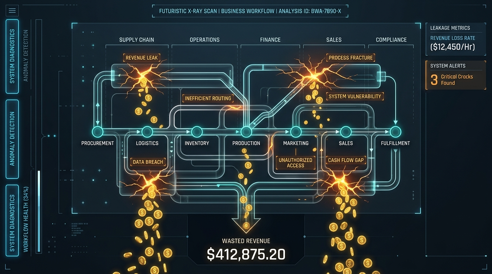

A Manifesto for the Modern Sovereign Business.
Most AI "experts" are selling toys. They peddle chatbots that hallucinate and "miracle cures" that create more noise than signal. At Revenue Performance Integrations (RPI), we find this offensive.
Your business is not an experiment. It is your life’s work.
We don't "add AI." We perform Revenue Surgery. We are here to kill the manual chaos that is suffocating your growth. We don't sell software; we buy you back your time and your sanity.

Every minute your staff spends manually moving data from a lead form to a spreadsheet is a "tax" on your future. Most businesses are bleeding 20% of their revenue through cracks they can't even see.
Our Diagnostic isn't a "report"—it’s an X-Ray. We expose the specific bottlenecks that are keeping you small. We quantify the cost of your hesitation. If you are losing $142k a year to slow lead response, that isn't an "efficiency gap"—it's an emergency.
Complexity is a parasite. Most automation firms build "bespoke" puzzles that break the moment you scale. We reject that. We are Lead Operations Architects. We build rigid, high-performance engines based on the "non-negotiables" of scale:
We don't just give you a tool; we give you a new reality. Our 3-week "Operations Upgrade" is a transition from Manual Exhaustion to Automated Domination.
This isn't about "tech stack"—it's about peace of mind.
The world changes. Your business evolves. We don't build a system and disappear. We stay in the trenches. Our mission is to move you from a "service-led" struggle to a "productized" powerhouse.
Buried in admin and "to-do" lists.
32 hours a week reclaimed for high-level strategy.
Operating on "vibes" and messy sheets.
A dashboard that shows exactly where your money is.
Watching leads wither and die in the inbox.
Instant, 24/7 engagement that closes deals.
Let’s stop playing with AI toys and start engineering a performance engine.